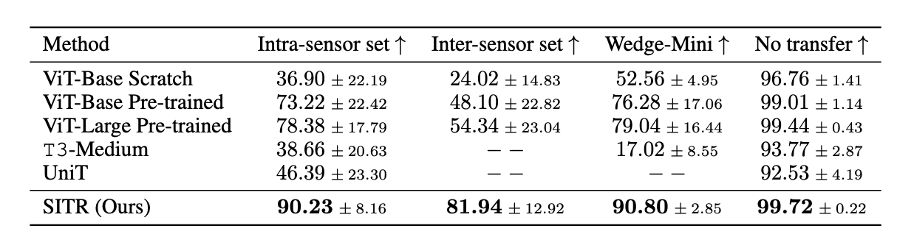
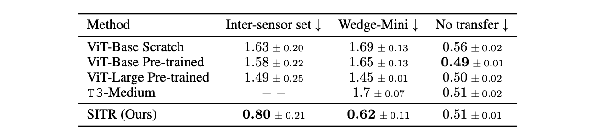

Reconstruction examples for various sensors. The top row shows input tactile images, the middle row presents 3D reconstructions, and the bottom row shows the contact objects. Simulated sensors (Simulation 1 and 2) are in the training set, while real sensors (GelSight Mini, DIGIT, Hex, Wedge) are not.
We qualitatively show how SITR preserves geometry and texture information across sensors by reconstructing the contact height map.
We conduct classification and pose estimation experiments with multiple tactile sensors that can be divided into two groups:
-
Intra-sensor set: GelSight Mini 1 to 4 of different gel pads. These sensors have the same optical design, i.e., placement of camera and light sources, but differ in brightness and color of tactile signals due to manufacturing differences and choice of coating materials.
-
Inter-sensor set: GelSight Mini 1, GelSight Wedge, GelSight Hex, and DIGIT. These sensors are designed with very different optical structures and, therefore, generate tactile signals that are significantly different from each other.

Table 1: Results of object classification accuracy on 16 classes for model transfer and no-transfer performance.
We report the mean and standard deviation of transfer accuracy percent among the sensor sets specified.
Random guess classification accuracy corresponds to $6.67\%$.

Table 2: Results of pose estimation with 6 objects. We report the mean and standard deviation of transfer pose estimation root mean square error (RMSE) in $mm$ among the sensor sets specified.
Random guess pose estimation RMSE corresponds to $2.52 mm$.